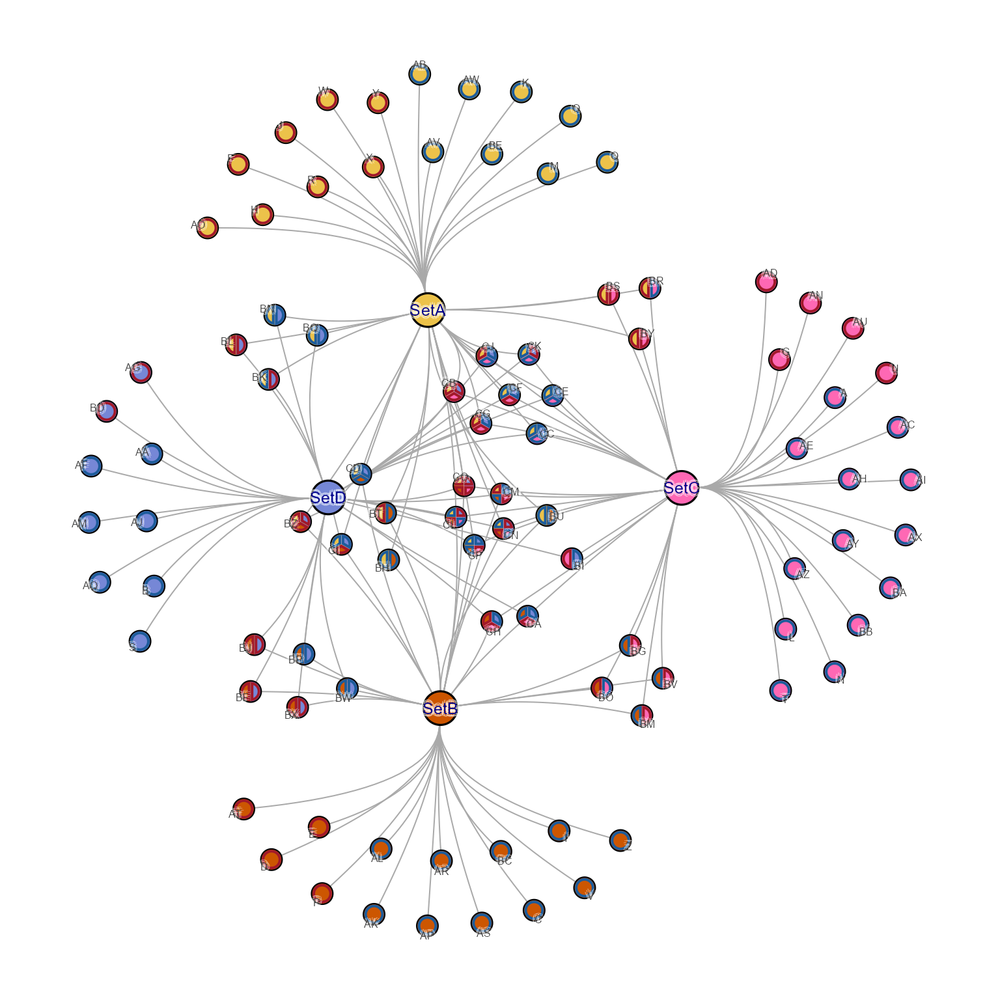
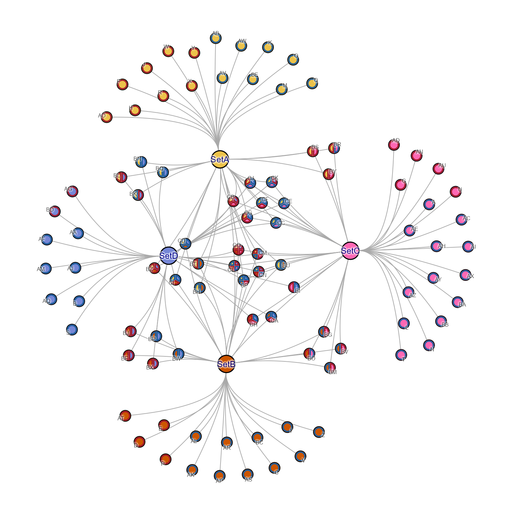
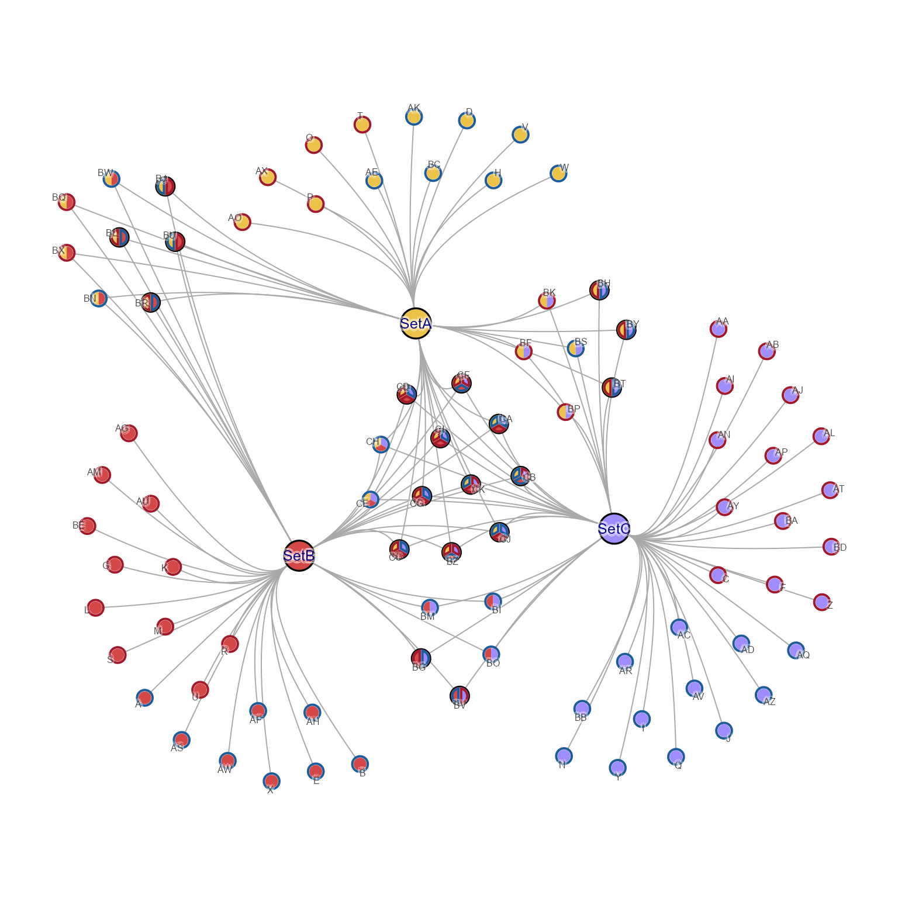
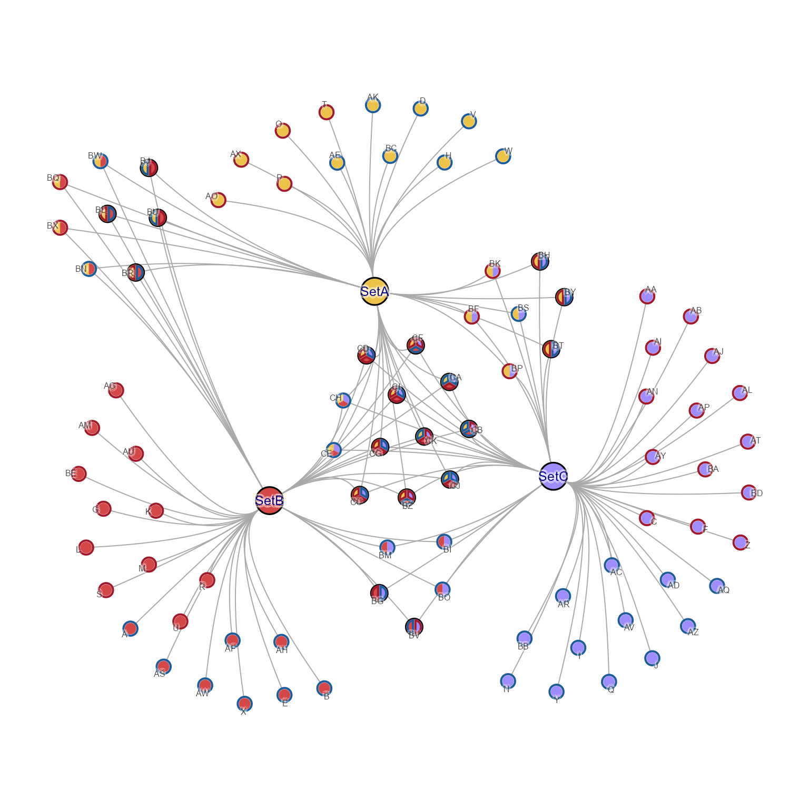
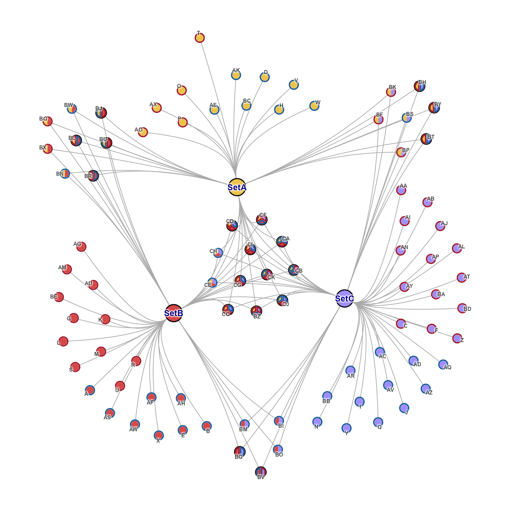
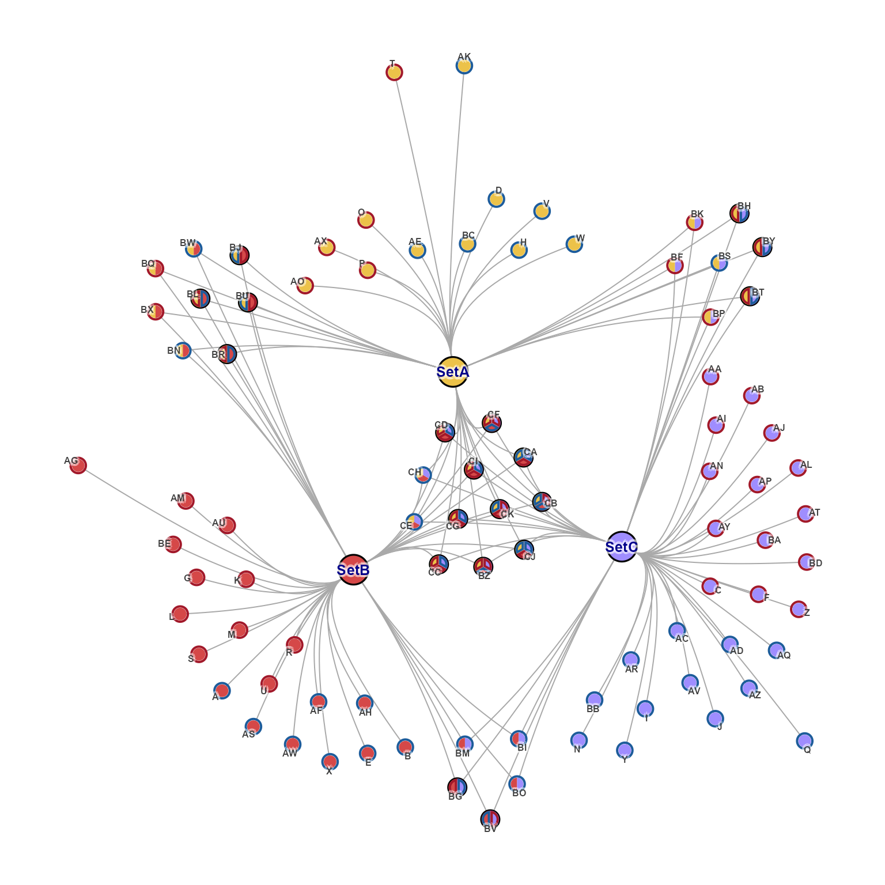
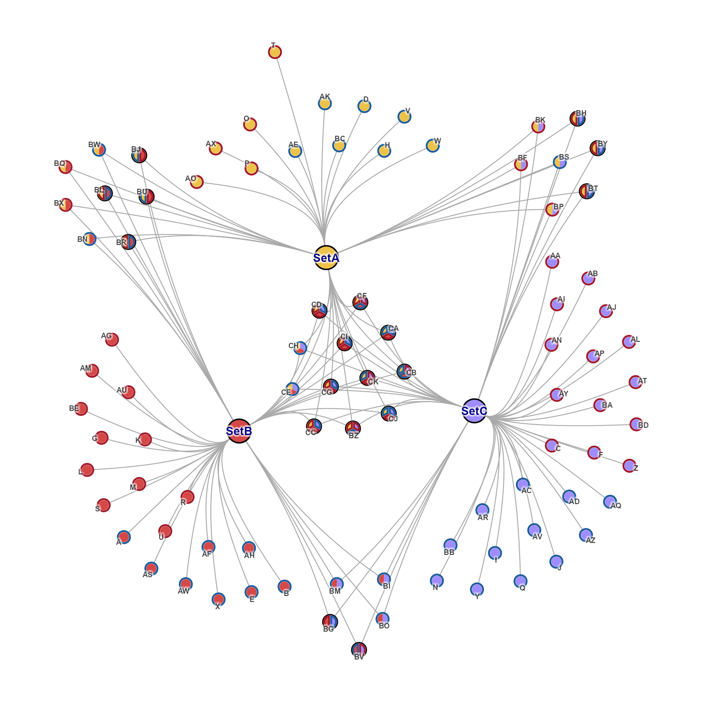
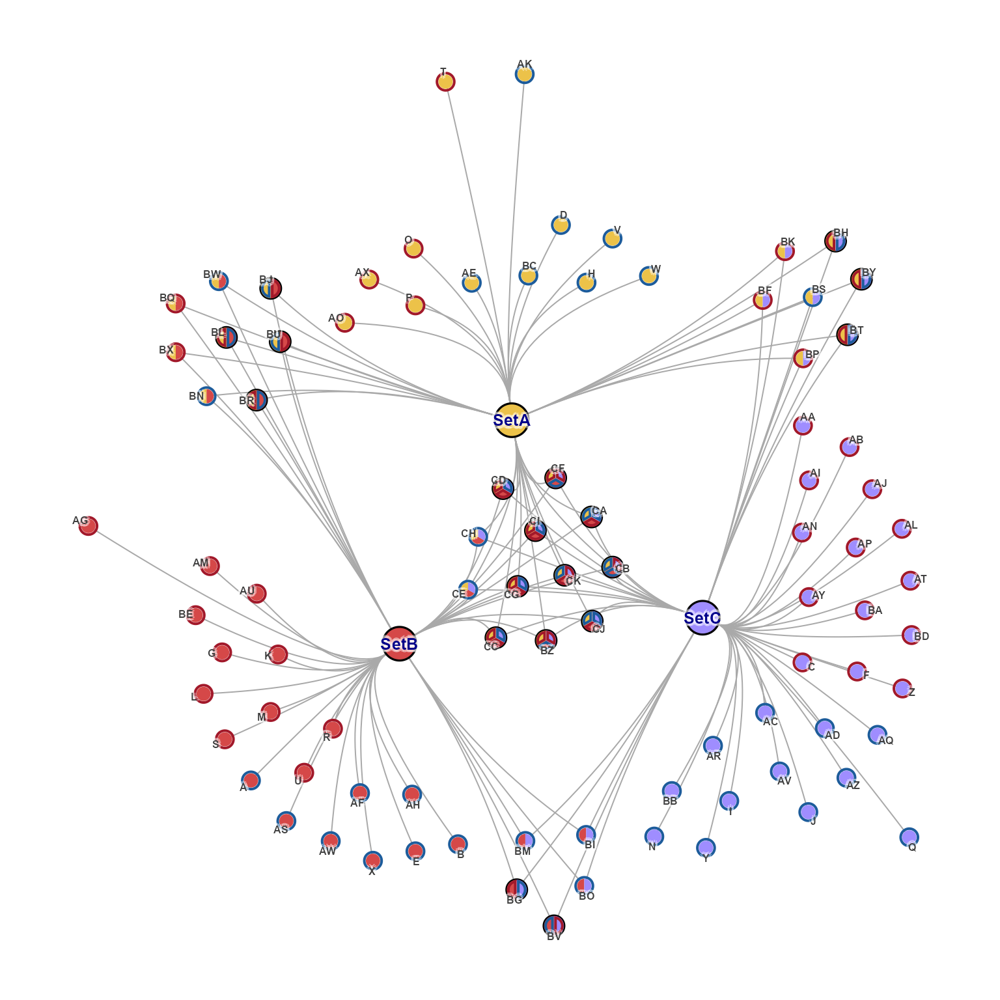

Make Cnet test igraph
make_cnet_test(
num_sets = 4,
overlap_counts = c(57, 20, 12, 5),
row_prefix = "",
column_prefix = "Set",
add_direction = TRUE,
set_colors = NULL,
seed = 123,
repulse = 3.5,
hide_solo_pie = TRUE,
...
)Details
This function simply creates an igraph object with attributes
expected for a cnet plot object:
node attribute
"nodeType"with valuesc("Gene", "Set").
It optionally derives random directionality when add_direction=TRUE,
and calls apply_cnet_direction() so node borders are updated
appropriately.
See also
Other jam cnet igraph functions:
adjust_cnet_nodeset(),
adjust_cnet_set_relayout_gene(),
apply_cnet_direction(),
apply_nodeset_spacing(),
get_cnet_nodeset(),
nudge_igraph_node(),
rotate_igraph_layout()
Examples
# by default, single-border-color pie is shown as circle
cnet1 <- make_cnet_test(border_lwd=2)
#> Warning: number of items to replace is not a multiple of replacement length
#> Warning: number of items to replace is not a multiple of replacement length
#> Warning: number of items to replace is not a multiple of replacement length
#> Warning: coercing argument of type 'list' to logical
par("mar"=c(0, 0, 0, 0) + 0.5);
jam_igraph(cnet1, use_shadowText=TRUE)
 # hide_solo_pie=FALSE shows every pie wedge bordder
cnet2 <- make_cnet_test(hide_solo_pie=FALSE, border_lwd=2)
#> Warning: number of items to replace is not a multiple of replacement length
#> Warning: number of items to replace is not a multiple of replacement length
#> Warning: number of items to replace is not a multiple of replacement length
#> Warning: coercing argument of type 'list' to logical
jam_igraph(cnet2, use_shadowText=TRUE)

# Set nodes can be adjusted, reorienting the Gene nodes
cnet2_adj <- adjust_cnet_set_relayout_gene(cnet2,
nodes=c("SetB", "SetD"),
x=c(-0.1, 0), y=c(0, -0.2),
repulse=3.6);
jam_igraph(cnet2_adj, use_shadowText=TRUE, label_dist_factor=0)
# hide_solo_pie=FALSE shows every pie wedge bordder
cnet2 <- make_cnet_test(hide_solo_pie=FALSE, border_lwd=2)
#> Warning: number of items to replace is not a multiple of replacement length
#> Warning: number of items to replace is not a multiple of replacement length
#> Warning: number of items to replace is not a multiple of replacement length
#> Warning: coercing argument of type 'list' to logical
jam_igraph(cnet2, use_shadowText=TRUE)

# Set nodes can be adjusted, reorienting the Gene nodes
cnet2_adj <- adjust_cnet_set_relayout_gene(cnet2,
nodes=c("SetB", "SetD"),
x=c(-0.1, 0), y=c(0, -0.2),
repulse=3.6);
jam_igraph(cnet2_adj, use_shadowText=TRUE, label_dist_factor=0)
 # nodeset spacing can be enforced
cnet3 <- make_cnet_test(num_sets=3)
#> Warning: number of items to replace is not a multiple of replacement length
#> Warning: number of items to replace is not a multiple of replacement length
#> Warning: number of items to replace is not a multiple of replacement length
#> Warning: coercing argument of type 'list' to logical
jam_igraph(cnet3, use_shadowText=TRUE)
# nodeset spacing can be enforced
cnet3 <- make_cnet_test(num_sets=3)
#> Warning: number of items to replace is not a multiple of replacement length
#> Warning: number of items to replace is not a multiple of replacement length
#> Warning: number of items to replace is not a multiple of replacement length
#> Warning: coercing argument of type 'list' to logical
jam_igraph(cnet3, use_shadowText=TRUE)
 cnet3_sp <- apply_nodeset_spacing(cnet3,
percent_spacing=7)
jam_igraph(cnet3_sp, use_shadowText=TRUE)
cnet3_sp <- apply_nodeset_spacing(cnet3,
percent_spacing=7)
jam_igraph(cnet3_sp, use_shadowText=TRUE)
 # a specific nodeset can be individually adjusted
cnet3_adj <- adjust_cnet_nodeset(cnet3_sp,
set_nodes=list(c("SetA", "SetB")),
x=c(-0.2), y=c(0.2))
jam_igraph(cnet3_adj, use_shadowText=TRUE)

# several nodesets can be adjusted at once
cnet3_adj2 <- adjust_cnet_nodeset(cnet3_sp,
set_nodes=list("SetA,SetB", "SetA,SetC", "SetB,SetC"),
x=c(-0.2, 0.2, 0), y=c(0.2, 0.2, -0.2))
jam_igraph(cnet3_adj2, use_shadowText=TRUE)
# a specific nodeset can be individually adjusted
cnet3_adj <- adjust_cnet_nodeset(cnet3_sp,
set_nodes=list(c("SetA", "SetB")),
x=c(-0.2), y=c(0.2))
jam_igraph(cnet3_adj, use_shadowText=TRUE)

# several nodesets can be adjusted at once
cnet3_adj2 <- adjust_cnet_nodeset(cnet3_sp,
set_nodes=list("SetA,SetB", "SetA,SetC", "SetB,SetC"),
x=c(-0.2, 0.2, 0), y=c(0.2, 0.2, -0.2))
jam_igraph(cnet3_adj2, use_shadowText=TRUE)
 # individual nodes can be nudged
cnet3_adj2_nudge <- nudge_igraph_node(cnet3_adj2,
nodes=c("T"), x=c(-0.02), y=c(0.1))
jam_igraph(cnet3_adj2_nudge, use_shadowText=TRUE, vertex.label.font=2)

# nodes can be nudged in larger sets using nodes_xy
cnet3_adj2_nudge2 <- nudge_igraph_node(cnet3_adj2,
nodes_xy=list(
T=c(-0.02, 0.2),
AK=c(0.02, 0.2),
AG=c(-0.2, 0),
Q=c(0.2, 0)
))
jam_igraph(cnet3_adj2_nudge2, use_shadowText=TRUE, vertex.label.font=2)

# individual nodes can be nudged
cnet3_adj2_nudge <- nudge_igraph_node(cnet3_adj2,
nodes=c("T"), x=c(-0.02), y=c(0.1))
jam_igraph(cnet3_adj2_nudge, use_shadowText=TRUE, vertex.label.font=2)

# nodes can be nudged in larger sets using nodes_xy
cnet3_adj2_nudge2 <- nudge_igraph_node(cnet3_adj2,
nodes_xy=list(
T=c(-0.02, 0.2),
AK=c(0.02, 0.2),
AG=c(-0.2, 0),
Q=c(0.2, 0)
))
jam_igraph(cnet3_adj2_nudge2, use_shadowText=TRUE, vertex.label.font=2)
